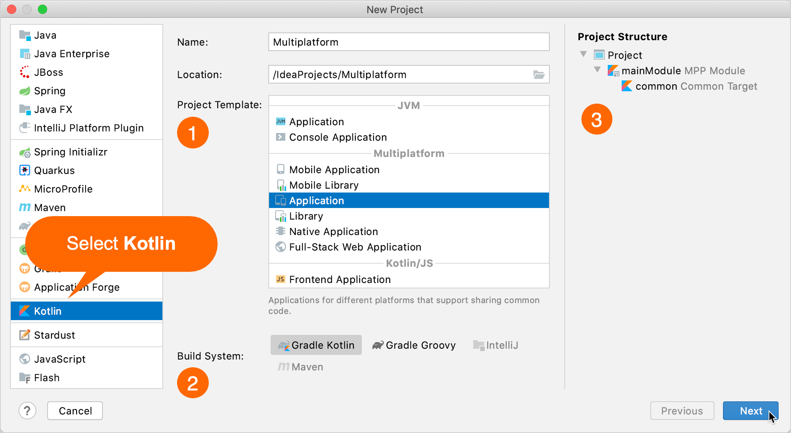
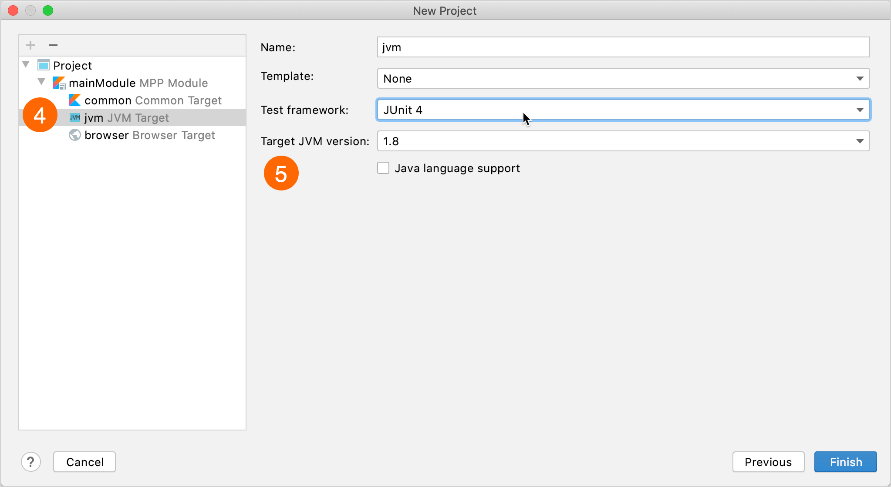
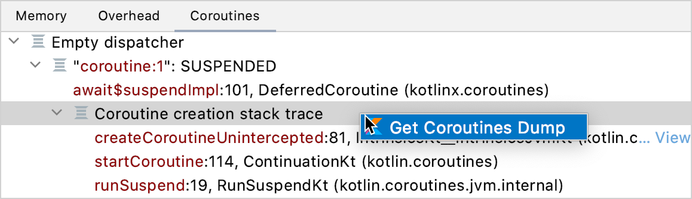
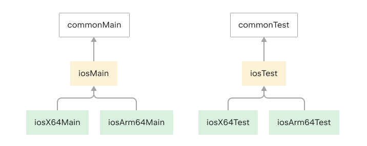
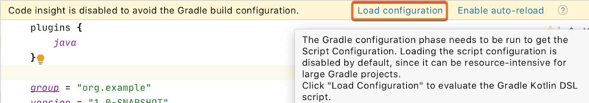
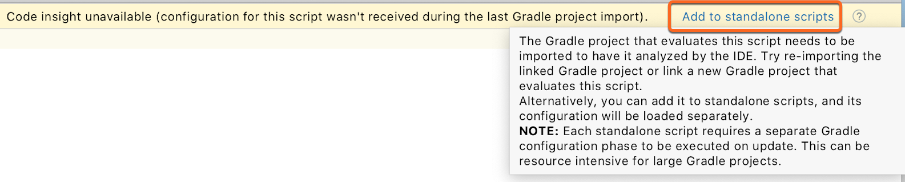
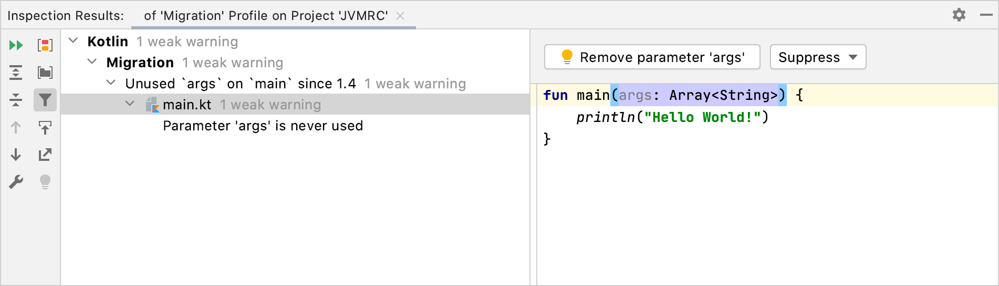

Kotlin 1.4.0 的新特性
在 Kotlin 1.4.0 中，我们对其所有组件进行了大量改进，其中重点是质量与性能。 以下是 Kotlin 1.4.0 中最重要的变更列表。
语言特性与改进
Kotlin 1.4.0 中有各种不同的语言特性与改进。包括：
Kotlin 接口的 SAM 转换
Before Kotlin 1.4.0, you could apply SAM (Single Abstract Method) conversions only when working with Java methods and Java
interfaces from Kotlin. From now on, you can use SAM conversions for Kotlin interfaces as well.
To do so, mark a Kotlin interface explicitly as functional with the fun modifier.
SAM conversion applies if you pass a lambda as an argument when an interface with only one single abstract method is expected as a parameter. In this case, the compiler automatically converts the lambda to an instance of the class that implements the abstract member function.
fun interface IntPredicate {
fun accept(i: Int): Boolean
}
val isEven = IntPredicate { it % 2 == 0 }
fun main() {
println("Is 7 even? - ${isEven.accept(7)}")
}
Learn more about Kotlin functional interfaces and SAM conversions.
面向库作者的显式 API 模式
Kotlin compiler offers explicit API mode for library authors. In this mode, the compiler performs additional checks that help make the library's API clearer and more consistent. It adds the following requirements for declarations exposed to the library's public API:
- Visibility modifiers are required for declarations if the default visibility exposes them to the public API. This helps ensure that no declarations are exposed to the public API unintentionally.
- Explicit type specifications are required for properties and functions that are exposed to the public API. This guarantees that API users are aware of the types of API members they use.
Depending on your configuration, these explicit APIs can produce errors (strict mode) or warnings (warning mode). Certain kinds of declarations are excluded from such checks for the sake of readability and common sense:
- primary constructors
- properties of data classes
- property getters and setters
overridemethods
Explicit API mode analyzes only the production sources of a module.
To compile your module in the explicit API mode, add the following lines to your Gradle build script:
【Kotlin】
kotlin {
// for strict mode
explicitApi()
// or
explicitApi = ExplicitApiMode.Strict
// for warning mode
explicitApiWarning()
// or
explicitApi = ExplicitApiMode.Warning
}
【Groovy】
kotlin {
// for strict mode
explicitApi()
// or
explicitApi = 'strict'
// for warning mode
explicitApiWarning()
// or
explicitApi = 'warning'
}
When using the command-line compiler, switch to explicit API mode by adding the -Xexplicit-api compiler option
with the value strict or warning.
-Xexplicit-api={strict|warning}
Find more details about the explicit API mode in the KEEP.
混用具名与位置参数
In Kotlin 1.3, when you called a function with named arguments, you had to place all the
arguments without names (positional arguments) before the first named argument. For example, you could call f(1, y = 2),
but you couldn't call f(x = 1, 2).
It was really annoying when all the arguments were in their correct positions but you wanted to specify a name for one argument in the middle.
It was especially helpful for making absolutely clear which attribute a boolean or null value belongs to.
In Kotlin 1.4, there is no such limitation – you can now specify a name for an argument in the middle of a set of positional arguments. Moreover, you can mix positional and named arguments any way you like, as long as they remain in the correct order.
fun reformat(
str: String,
uppercaseFirstLetter: Boolean = true,
wordSeparator: Char = ' '
) {
// ...
}
//Function call with a named argument in the middle
reformat("This is a String!", uppercaseFirstLetter = false , '-')
拖尾的逗号
With Kotlin 1.4 you can now add a trailing comma in enumerations such as argument
and parameter lists, when entries, and components of destructuring declarations.
With a trailing comma, you can add new items and change their order without adding or removing commas.
This is especially helpful if you use multi-line syntax for parameters or values. After adding a trailing comma, you can then easily swap lines with parameters or values.
fun reformat(
str: String,
uppercaseFirstLetter: Boolean = true,
wordSeparator: Character = ' ', //尾部逗号
) {
// ...
}
val colors = listOf(
"red",
"green",
"blue", //尾部逗号
)
可调用引用改进
Kotlin 1.4 supports more cases for using callable references:
- 对具有默认实参值的函数的引用
- 可作为返回
Unit的函数的函数引用 - 根据函数的参数数量进行调整的引用
- 可调用引用的挂起转换
对具有默认实参值的函数的引用
Now you can use callable references to functions with default argument values. If the callable reference
to the function foo takes no arguments, the default value 0 is used.
fun foo(i: Int = 0): String = "$i!"
fun apply(func: () -> String): String = func()
fun main() {
println(apply(::foo))
}
Previously, you had to write additional overloads for the function apply to use the default argument values.
// some new overload
fun applyInt(func: (Int) -> String): String = func(0)
返回 Unit 的函数的函数引用
In Kotlin 1.4, you can use callable references to functions returning any type in Unit-returning functions.
Before Kotlin 1.4, you could only use lambda arguments in this case. Now you can use both lambda arguments and callable references.
fun foo(f: () -> Unit) { }
fun returnsInt(): Int = 42
fun main() {
foo { returnsInt() } // this was the only way to do it before 1.4
foo(::returnsInt) // starting from 1.4, this also works
}
根据函数的参数数量进行调整的引用
Now you can adapt callable references to functions when passing a variable number of arguments (vararg) .
You can pass any number of parameters of the same type at the end of the list of passed arguments.
fun foo(x: Int, vararg y: String) {}
fun use0(f: (Int) -> Unit) {}
fun use1(f: (Int, String) -> Unit) {}
fun use2(f: (Int, String, String) -> Unit) {}
fun test() {
use0(::foo)
use1(::foo)
use2(::foo)
}
可调用引用的挂起转换
In addition to suspend conversion on lambdas, Kotlin now supports suspend conversion on callable references starting from version 1.4.0.
fun call() {}
fun takeSuspend(f: suspend () -> Unit) {}
fun test() {
takeSuspend { call() } // OK before 1.4
takeSuspend(::call) // In Kotlin 1.4, it also works
}
在循环中的 when 内部使用 break 与 continue
In Kotlin 1.3, you could not use unqualified break and continue inside when expressions included in loops. The reason was that these keywords were reserved for possible fall-through behavior in when expressions.
That's why if you wanted to use break and continue inside when expressions in loops, you had to label them, which became rather cumbersome.
fun test(xs: List<Int>) {
LOOP@for (x in xs) {
when (x) {
2 -> continue@LOOP
17 -> break@LOOP
else -> println(x)
}
}
}
In Kotlin 1.4, you can use break and continue without labels inside when expressions included in loops. They behave as expected by terminating the nearest enclosing loop or proceeding to its next step.
fun test(xs: List<Int>) {
for (x in xs) {
when (x) {
2 -> continue
17 -> break
else -> println(x)
}
}
}
The fall-through behavior inside when is subject to further design.
IDE 中的新工具
With Kotlin 1.4, you can use the new tools in IntelliJ IDEA to simplify Kotlin development:
新的灵活项目向导
With the flexible new Kotlin Project Wizard, you have a place to easily create and configure different types of Kotlin projects, including multiplatform projects, which can be difficult to configure without a UI.

The new Kotlin Project Wizard is both simple and flexible:
- Select the project template, depending on what you're trying to do. More templates will be added in the future.
- Select the build system – Gradle (Kotlin or Groovy DSL), Maven, or IntelliJ IDEA.
The Kotlin Project Wizard will only show the build systems supported on the selected project template. - Preview the project structure directly on the main screen.
Then you can finish creating your project or, optionally, configure the project on the next screen:
- Add/remove modules and targets supported for this project template.
- Configure module and target settings, for example, the target JVM version, target template, and test framework.

In the future, we are going to make the Kotlin Project Wizard even more flexible by adding more configuration options and templates.
You can try out the new Kotlin Project Wizard by working through these tutorials:
- Create a console application based on Kotlin/JVM
- Create a Kotlin/JS application for React
- Create a Kotlin/Native application
协程调试器
Many people already use coroutines for asynchronous programming. But when it came to debugging, working with coroutines before Kotlin 1.4, could be a real pain. Since coroutines jumped between threads, it was difficult to understand what a specific coroutine was doing and check its context. In some cases, tracking steps over breakpoints simply didn't work. As a result, you had to rely on logging or mental effort to debug code that used coroutines.
In Kotlin 1.4, debugging coroutines is now much more convenient with the new functionality shipped with the Kotlin plugin.
Debugging works for versions 1.3.8 or later of
kotlinx-coroutines-core.
The Debug Tool Window now contains a new Coroutines tab. In this tab, you can find information about both currently running and suspended coroutines. The coroutines are grouped by the dispatcher they are running on.
Now you can:
- Easily check the state of each coroutine.
- See the values of local and captured variables for both running and suspended coroutines.
- See a full coroutine creation stack, as well as a call stack inside the coroutine. The stack includes all frames with variable values, even those that would be lost during standard debugging.
If you need a full report containing the state of each coroutine and its stack, right-click inside the Coroutines tab, and then click Get Coroutines Dump. Currently, the coroutines dump is rather simple, but we're going to make it more readable and helpful in future versions of Kotlin.

Learn more about debugging coroutines in this blog post and IntelliJ IDEA documentation.
新编译器
The new Kotlin compiler is going to be really fast; it will unify all the supported platforms and provide an API for compiler extensions. It's a long-term project, and we've already completed several steps in Kotlin 1.4.0:
- 新的、更强大的类型推断算法 is enabled by default.
- 新的 JVM 与 JS IR 后端. They will become the default once we stabilize them.
新的更强大的类型推断算法
Kotlin 1.4 uses a new, more powerful type inference algorithm. This new algorithm was already available to try in Kotlin 1.3 by specifying a compiler option, and now it's used by default. You can find the full list of issues fixed in the new algorithm in YouTrack. Here you can find some of the most noticeable improvements:
- 会自动推断类型的更多情况
- lambda 表达式最后一个表达式的智能转换
- 可调用引用的智能转换
- 属性委托的更佳推断
- 具有不同参数的 Java 接口的 SAM 转换
- Kotlin 中的 Java SAM 接口
会自动推断类型的更多情况
The new inference algorithm infers types for many cases where the old algorithm required you to specify them explicitly.
For instance, in the following example the type of the lambda parameter it is correctly inferred to String?:
//sampleStart
val rulesMap: Map<String, (String?) -> Boolean> = mapOf(
"weak" to { it != null },
"medium" to { !it.isNullOrBlank() },
"strong" to { it != null && "^[a-zA-Z0-9]+$".toRegex().matches(it) }
)
//sampleEnd
fun main() {
println(rulesMap.getValue("weak")("abc!"))
println(rulesMap.getValue("strong")("abc"))
println(rulesMap.getValue("strong")("abc!"))
}
In Kotlin 1.3, you needed to introduce an explicit lambda parameter or replace to with a Pair constructor with
explicit generic arguments to make it work.
lambda 表达式最后一个表达式的智能转换
In Kotlin 1.3, the last expression inside a lambda wasn't smart cast unless you specified the expected type. Thus, in the
following example, Kotlin 1.3 infers String? as the type of the result variable:
val result = run {
var str = currentValue()
if (str == null) {
str = "test"
}
str // the Kotlin compiler knows that str is not null here
}
// The type of 'result' is String? in Kotlin 1.3 and String in Kotlin 1.4
In Kotlin 1.4, thanks to the new inference algorithm, the last expression inside a lambda gets smart cast, and this new,
more precise type is used to infer the resulting lambda type. Thus, the type of the result variable becomes String.
In Kotlin 1.3, you often needed to add explicit casts (either !! or type casts like as String) to make such cases work,
and now these casts have become unnecessary.
可调用引用的智能转换
In Kotlin 1.3, you couldn't access a member reference of a smart cast type. Now in Kotlin 1.4 you can:
import kotlin.reflect.KFunction
sealed class Animal
class Cat : Animal() {
fun meow() {
println("meow")
}
}
class Dog : Animal() {
fun woof() {
println("woof")
}
}
//sampleStart
fun perform(animal: Animal) {
val kFunction: KFunction<*> = when (animal) {
is Cat -> animal::meow
is Dog -> animal::woof
}
kFunction.call()
}
//sampleEnd
fun main() {
perform(Cat())
}
You can use different member references animal::meow and animal::woof after the animal variable has been smart cast
to specific types Cat and Dog. After type checks, you can access member references corresponding to subtypes.
属性委托的更佳推断
The type of a delegated property wasn't taken into account while analyzing the delegate expression which follows the by
keyword. For instance, the following code didn't compile before, but now the compiler correctly infers the types of the
old and new parameters as String?:
import kotlin.properties.Delegates
fun main() {
var prop: String? by Delegates.observable(null) { p, old, new ->
println("$old → $new")
}
prop = "abc"
prop = "xyz"
}
具有不同参数的 Java 接口的 SAM 转换
Kotlin has supported SAM conversions for Java interfaces from the beginning, but there was one case that wasn't supported, which was sometimes annoying when working with existing Java libraries. If you called a Java method that took two SAM interfaces as parameters, both arguments needed to be either lambdas or regular objects. You couldn't pass one argument as a lambda and another as an object.
The new algorithm fixes this issue, and you can pass a lambda instead of a SAM interface in any case, which is the way you'd naturally expect it to work.
// FILE: A.java
public class A {
public static void foo(Runnable r1, Runnable r2) {}
}
// FILE: test.kt
fun test(r1: Runnable) {
A.foo(r1) {} // Works in Kotlin 1.4
}
Kotlin 中的 Java SAM 接口
In Kotlin 1.4, you can use Kotlin 中的 Java SAM 接口 and apply SAM conversions to them.
import java.lang.Runnable
fun foo(r: Runnable) {}
fun test() {
foo { } // OK
}
In Kotlin 1.3, you would have had to declare the function foo above in Java code to perform a SAM conversion.
统一的后端与可扩展性
In Kotlin, we have three backends that generate executables: Kotlin/JVM, Kotlin/JS, and Kotlin/Native. Kotlin/JVM and Kotlin/JS don't share much code since they were developed independently of each other. Kotlin/Native is based on a new infrastructure built around an intermediate representation (IR) for Kotlin code.
We are now migrating Kotlin/JVM and Kotlin/JS to the same IR. As a result, all three backends share a lot of logic and have a unified pipeline. This allows us to implement most features, optimizations, and bug fixes only once for all platforms. Both new IR-based back-ends are in Alpha.
A common backend infrastructure also opens the door for multiplatform compiler extensions. You will be able to plug into the pipeline and add custom processing and transformations that will automatically work for all platforms.
We encourage you to use our new JVM IR and JS IR backends, which are currently in Alpha, and share your feedback with us.
Kotlin/JVM
Kotlin 1.4.0 includes a number of JVM-specific improvements, such as:
新的 JVM IR 后端
Along with Kotlin/JS, we are migrating Kotlin/JVM to the unified IR backend, which allows us to implement most features and bug fixes once for all platforms. You will also be able to benefit from this by creating multiplatform extensions that will work for all platforms.
Kotlin 1.4.0 does not provide a public API for such extensions yet, but we are working closely with our partners, including Jetpack Compose, who are already building their compiler plugins using our new backend.
We encourage you to try out the new Kotlin/JVM backend, which is currently in Alpha, and to file any issues and feature requests to our issue tracker. This will help us to unify the compiler pipelines and bring compiler extensions like Jetpack Compose to the Kotlin community more quickly.
To enable the new JVM IR backend, specify an additional compiler option in your Gradle build script:
kotlinOptions.useIR = true
If you enable Jetpack Compose, you will automatically be opted in to the new JVM backend without needing to specify the compiler option in
kotlinOptions.
When using the command-line compiler, add the compiler option -Xuse-ir.
You can use code compiled by the new JVM IR backend only if you've enabled the new backend. Otherwise, you will get an error. Considering this, we don't recommend that library authors switch to the new backend in production.
生成默认方法的新模式
When compiling Kotlin code to targets JVM 1.8 and above, you could compile non-abstract methods of Kotlin interfaces into
Java's default methods. For this purpose, there was a mechanism that includes the @JvmDefault annotation for marking
such methods and the -Xjvm-default compiler option that enables processing of this annotation.
In 1.4.0, we've added a new mode for generating default methods: -Xjvm-default=all compiles all non-abstract methods of Kotlin
interfaces to default Java methods. For compatibility with the code that uses the interfaces compiled without default,
we also added all-compatibility mode.
For more information about default methods in the Java interop, see the interoperability documentation and this blog post.
统一用于空检测的异常类型
Starting from Kotlin 1.4.0, all runtime null checks will throw a java.lang.NullPointerException instead of KotlinNullPointerException,
IllegalStateException, IllegalArgumentException, and TypeCastException. This applies to: the !! operator, parameter
null checks in the method preamble, platform-typed expression null checks, and the as operator with a non-nullable type.
This doesn't apply to lateinit null checks and explicit library function calls like checkNotNull or requireNotNull.
This change increases the number of possible null check optimizations that can be performed either by the Kotlin compiler or by various kinds of bytecode processing tools, such as the Android R8 optimizer.
Note that from a developer's perspective, things won't change that much: the Kotlin code will throw exceptions with the same error messages as before. The type of exception changes, but the information passed stays the same.
在 JVM 字节码中的类型注解
Kotlin can now generate type annotations in the JVM bytecode (target version 1.8+), so that they become available in Java reflection at runtime. To emit the type annotation in the bytecode, follow these steps:
- Make sure that your declared annotation has a proper annotation target (Java's
ElementType.TYPE_USEor Kotlin'sAnnotationTarget.TYPE) and retention (AnnotationRetention.RUNTIME). - Compile the annotation class declaration to JVM bytecode target version 1.8+. You can specify it with
-jvm-target=1.8compiler option. - Compile the code that uses the annotation to JVM bytecode target version 1.8+ (
-jvm-target=1.8) and add the-Xemit-jvm-type-annotationscompiler option.
Note that the type annotations from the standard library aren't emitted in the bytecode for now because the standard library is compiled with the target version 1.6.
So far, only the basic cases are supported:
- Type annotations on method parameters, method return types and property types;
- Invariant projections of type arguments, such as
Smth<@Ann Foo>,Array<@Ann Foo>.
In the following example, the @Foo annotation on the String type can be emitted to the bytecode and then used by the
library code:
@Target(AnnotationTarget.TYPE)
annotation class Foo
class A {
fun foo(): @Foo String = "OK"
}
Kotlin/JS
On the JS platform, Kotlin 1.4.0 provides the following improvements:
新的 Gradle DSL
The kotlin.js Gradle plugin comes with an adjusted Gradle DSL, which provides a number of new configuration options and is more closely aligned to the DSL used by the kotlin-multiplatform plugin. Some of the most impactful changes include:
- Explicit toggles for the creation of executable files via
binaries.executable(). Read more about the executing Kotlin/JS and its environment here. - Configuration of webpack's CSS and style loaders from within the Gradle configuration via
cssSupport. Read more about using CSS and style loaders here. - Improved management for npm dependencies, with mandatory version numbers or semver version ranges, as well as support for development, peer, and optional npm dependencies using
devNpm,optionalNpmandpeerNpm. Read more about dependency management for npm packages directly from Gradle here. - Stronger integrations for Dukat, the generator for Kotlin external declarations. External declarations can now be generated at build time, or can be manually generated via a Gradle task.
新的 JS IR 后端
The IR backend for Kotlin/JS, which currently has Alpha stability, provides some new functionality specific to the Kotlin/JS target which is focused around the generated code size through dead code elimination, and improved interoperation with JavaScript and TypeScript, among others.
To enable the Kotlin/JS IR backend, set the key kotlin.js.compiler=ir in your gradle.properties, or pass the IR compiler type to the js function of your Gradle build script:
kotlin {
js(IR) { // or: LEGACY, BOTH
// ...
}
binaries.executable()
}
For more detailed information about how to configure the new backend, check out the Kotlin/JS IR compiler documentation.
With the new @JsExport annotation and the ability to generate TypeScript definitions from Kotlin code, the Kotlin/JS IR compiler backend improves JavaScript & TypeScript interoperability. This also makes it easier to integrate Kotlin/JS code with existing tooling, to create hybrid applications and leverage code-sharing functionality in multiplatform projects.
Learn more about the available features in the Kotlin/JS IR compiler backend.
Kotlin/Native
In 1.4.0, Kotlin/Native got a significant number of new features and improvements, including:
- 在 Swift 与 Objective-C 中支持挂起函数
- 默认支持 Objective-C 泛型
- Objective-C/Swift 互操作中的异常处理
- 默认在苹果目标平台生成 release 版 .dSYM
- 性能提升
- 简化了 CocoaPods 依赖项的管理
在 Swift 与 Objective-C 中支持 kotlin 的挂起函数
In 1.4.0, we add the basic support for suspending functions in Swift and Objective-C. Now, when you compile a Kotlin module
into an Apple framework, suspending functions are available in it as functions with callbacks (completionHandler in
the Swift/Objective-C terminology). When you have such functions in the generated framework's header, you can call them
from your Swift or Objective-C code and even override them.
For example, if you write this Kotlin function:
suspend fun queryData(id: Int): String = ...
...then you can call it from Swift like so:
queryData(id: 17) { result, error in
if let e = error {
print("ERROR: \(e)")
} else {
print(result!)
}
}
Learn more about using suspending functions in Swift and Objective-C.
默认支持 Objective-C 泛型
Previous versions of Kotlin provided experimental support for generics in Objective-C interop. Since 1.4.0, Kotlin/Native
generates Apple frameworks with generics from Kotlin code by default. In some cases, this may break existing Objective-C
or Swift code calling Kotlin frameworks. To have the framework header written without generics, add the -Xno-objc-generics compiler option.
kotlin {
targets.withType<org.jetbrains.kotlin.gradle.plugin.mpp.KotlinNativeTarget> {
binaries.all {
freeCompilerArgs += "-Xno-objc-generics"
}
}
}
Please note that all specifics and limitations listed in the documentation on interoperability with Objective-C are still valid.
Objective-C/Swift 互操作中的异常处理
In 1.4.0, we slightly change the Swift API generated from Kotlin with respect to the way exceptions are translated. There is
a fundamental difference in error handling between Kotlin and Swift. All Kotlin exceptions are unchecked, while Swift has
only checked errors. Thus, to make Swift code aware of expected exceptions, Kotlin functions should be marked with a @Throws
annotation specifying a list of potential exception classes.
When compiling to Swift or the Objective-C framework, functions that have or are inheriting @Throws annotation are represented
as NSError*-producing methods in Objective-C and as throws methods in Swift.
Previously, any exceptions other than RuntimeException and Error were propagated as NSError. Now this behavior changes:
now NSError is thrown only for exceptions that are instances of classes specified as parameters of @Throws annotation
(or their subclasses). Other Kotlin exceptions that reach Swift/Objective-C are considered unhandled and cause program termination.
默认在苹果目标平台生成 release 版 .dSYM
Starting with 1.4.0, the Kotlin/Native compiler produces debug symbol files
(.dSYMs) for release binaries on Darwin platforms by default. This can be disabled with the -Xadd-light-debug=disable
compiler option. On other platforms, this option is disabled by default. To toggle this option in Gradle, use:
kotlin {
targets.withType<org.jetbrains.kotlin.gradle.plugin.mpp.KotlinNativeTarget> {
binaries.all {
freeCompilerArgs += "-Xadd-light-debug={enable|disable}"
}
}
}
Learn more about crash report symbolication.
性能提升
Kotlin/Native has received a number of performance improvements that speed up both the development process and execution. Here are some examples:
To improve the speed of object allocation, we now offer the mimalloc memory allocator as an alternative to the system allocator. mimalloc works up to two times faster on some benchmarks. Currently, the usage of mimalloc in Kotlin/Native is experimental; you can switch to it using the
-Xallocator=mimalloccompiler option.We've reworked how C interop libraries are built. With the new tooling, Kotlin/Native produces interop libraries up to 4 times as fast as before, and artifacts are 25% to 30% the size they used to be.
Overall runtime performance has improved because of optimizations in GC. This improvement will be especially apparent in projects with a large number of long-lived objects.
HashMapandHashSetcollections now work faster by escaping redundant boxing.In 1.3.70 we introduced two new features for improving the performance of Kotlin/Native compilation: caching project dependencies and running the compiler from the Gradle daemon. Since that time, we've managed to fix numerous issues and improve the overall stability of these features.
简化了 CocoaPods 依赖项的管理
Previously, once you integrated your project with the dependency manager CocoaPods, you could build an iOS, macOS, watchOS, or tvOS part of your project only in Xcode, separate from other parts of your multiplatform project. These other parts could be built in IntelliJ IDEA.
Moreover, every time you added a dependency on an Objective-C library stored in CocoaPods (Pod library), you had to switch
from IntelliJ IDEA to Xcode, call pod install, and run the Xcode build there.
Now you can manage Pod dependencies right in IntelliJ IDEA while enjoying the benefits it provides for working with code, such as code highlighting and completion. You can also build the whole Kotlin project with Gradle, without having to switch to Xcode. This means you only have to go to Xcode when you need to write Swift/Objective-C code or run your application on a simulator or device.
Now you can also work with Pod libraries stored locally.
Depending on your needs, you can add dependencies between:
- A Kotlin project and Pod libraries stored remotely in the CocoaPods repository or stored locally on your machine.
- A Kotlin Pod (Kotlin project used as a CocoaPods dependency) and an Xcode project with one or more targets.
Complete the initial configuration, and when you add a new dependency to cocoapods, just re-import the project in IntelliJ IDEA.
The new dependency will be added automatically. No additional steps are required.
Learn how to add dependencies.
Kotlin 多平台
Support for multiplatform projects is in Alpha. It may change incompatibly and require manual migration in the future. We appreciate your feedback on it in YouTrack.
Kotlin 多平台 reduces time spent writing and maintaining the same code for different platforms while retaining the flexibility and benefits of native programming. We continue investing our effort in multiplatform features and improvements:
Multiplatform projects require Gradle 6.0 or later.
使用分层项目结构在多个目标中共享代码
With the new hierarchical project structure support, you can share code among several platforms in a multiplatform project.
Previously, any code added to a multiplatform project could be placed either in a platform-specific source set, which is
limited to one target and can't be reused by any other platform, or in a common source set, like commonMain or commonTest,
which is shared across all the platforms in the project. In the common source set, you could only call a platform-specific
API by using an expect declaration that needs platform-specific actual implementations.
This made it easy to share code on all platforms, but it was not so easy to share between only some of the targets, especially similar ones that could potentially reuse a lot of the common logic and third-party APIs.
For example, in a typical multiplatform project targeting iOS, there are two iOS-related targets: one for iOS ARM64 devices, and the other for the x64 simulator. They have separate platform-specific source sets, but in practice, there is rarely a need for different code for the device and simulator, and their dependencies are much alike. So iOS-specific code could be shared between them.
Apparently, in this setup, it would be desirable to have a shared source set for two iOS targets, with Kotlin/Native code that could still directly call any of the APIs that are common to both the iOS device and the simulator.

Now you can do this with the hierarchical project structure support, which infers and adapts the API and language features available in each source set based on which targets consume them.
For common combinations of targets, you can create a hierarchical structure with target shortcuts.
For example, create two iOS targets and the shared source set shown above with the ios() shortcut:
kotlin {
ios() // iOS device and simulator targets; iosMain and iosTest source sets
}
For other combinations of targets, create a hierarchy manually
by connecting the source sets with the dependsOn relation.

【Kotlin】
kotlin{
sourceSets {
val desktopMain by creating {
dependsOn(commonMain)
}
val linuxX64Main by getting {
dependsOn(desktopMain)
}
val mingwX64Main by getting {
dependsOn(desktopMain)
}
val macosX64Main by getting {
dependsOn(desktopMain)
}
}
}
【Groovy】
kotlin {
sourceSets {
desktopMain {
dependsOn(commonMain)
}
linuxX64Main {
dependsOn(desktopMain)
}
mingwX64Main {
dependsOn(desktopMain)
}
macosX64Main {
dependsOn(desktopMain)
}
}
}
Thanks to the hierarchical project structure, libraries can also provide common APIs for a subset of targets. Learn more about sharing code in libraries.
在分层结构中利用原生库
You can use platform-dependent libraries, such as Foundation, UIKit, and POSIX, in source sets shared among several native targets. This can help you share more native code without being limited by platform-specific dependencies.
No additional steps are required – everything is done automatically. IntelliJ IDEA will help you detect common declarations that you can use in the shared code.
Learn more about usage of platform-dependent libraries.
只需指定一次依赖项
From now on, instead of specifying dependencies on different variants of the same library in shared and platform-specific source sets where it is used, you should specify a dependency only once in the shared source set.
【Kotlin】
kotlin {
sourceSets {
val commonMain by getting {
dependencies {
implementation("org.jetbrains.kotlinx:kotlinx-coroutines-core:1.10.2")
}
}
}
}
【Groovy】
kotlin {
sourceSets {
commonMain {
dependencies {
implementation 'org.jetbrains.kotlinx:kotlinx-coroutines-core:1.10.2'
}
}
}
}
Don't use kotlinx library artifact names with suffixes specifying the platform, such as -common, -native, or similar,
as they are NOT supported anymore. Instead, use the library base artifact name, which in the example above is kotlinx-coroutines-core.
However, the change doesn't currently affect:
- The
stdliblibrary – starting from Kotlin 1.4.0, the stdlib dependency is added automatically. - The
kotlin.testlibrary – you should still usetest-commonandtest-annotations-common. These dependencies will be addressed later.
If you need a dependency only for a specific platform, you can still use platform-specific variants of standard and kotlinx
libraries with such suffixes as -jvm or-js, for example kotlinx-coroutines-core-jvm.
Learn more about configuring dependencies.
Gradle 项目改进
Besides Gradle project features and improvements that are specific to Kotlin 多平台, Kotlin/JVM, Kotlin/Native, and Kotlin/JS, there are several changes applicable to all Kotlin Gradle projects:
默认添加了对标准库的依赖
You no longer need to declare a dependency on the stdlib library in any Kotlin Gradle project, including a multiplatform one.
The dependency is added by default.
The automatically added standard library will be the same version of the Kotlin Gradle plugin, since they have the same versioning.
For platform-specific source sets, the corresponding platform-specific variant of the library is used, while a common standard
library is added to the rest. The Kotlin Gradle plugin will select the appropriate JVM standard library depending on
the kotlinOptions.jvmTarget compiler option of your Gradle build script.
Learn how to change the default behavior.
Kotlin 项目的最低 Gradle 版本
To enjoy the new features in your Kotlin projects, update Gradle to the latest version. Multiplatform projects require Gradle 6.0 or later, while other Kotlin projects work with Gradle 5.4 or later.
改进了 IDE 对 *.gradle.kts 的支持
In 1.4.0, we continued improving the IDE support for Gradle Kotlin DSL scripts (*.gradle.kts files). Here is what the new
version brings:
Explicit loading of script configurations for better performance. Previously, the changes you make to the build script were loaded automatically in the background. To improve the performance, we've disabled the automatic loading of build script configuration in 1.4.0. Now the IDE loads the changes only when you explicitly apply them.
In Gradle versions earlier than 6.0, you need to manually load the script configuration by clicking Load Configuration in the editor.

In Gradle 6.0 and above, you can explicitly apply changes by clicking Load Gradle Changes or by reimporting the Gradle project.
We've added one more action in IntelliJ IDEA 2020.1 with Gradle 6.0 and above – Load Script Configurations, which loads changes to the script configurations without updating the whole project. This takes much less time than reimporting the whole project.
You should also Load Script Configurations for newly created scripts or when you open a project with new Kotlin plugin for the first time.
With Gradle 6.0 and above, you are now able to load all scripts at once as opposed to the previous implementation where they were loaded individually. Since each request requires the Gradle configuration phase to be executed, this could be resource-intensive for large Gradle projects.
Currently, such loading is limited to
build.gradle.ktsandsettings.gradle.ktsfiles (please vote for the related issue). To enable highlighting forinit.gradle.ktsor applied script plugins, use the old mechanism – adding them to standalone scripts. Configuration for that scripts will be loaded separately when you need it. You can also enable auto-reload for such scripts.
Better error reporting. Previously you could only see errors from the Gradle Daemon in separate log files. Now the Gradle Daemon returns all the information about errors directly and shows it in the Build tool window. This saves you both time and effort.
标准库
Here is the list of the most significant changes to the Kotlin standard library in 1.4.0:
- 公共异常处理 API
- 数组与集合的新函数
- 一些字符串操作函数
- 一些位操作
- 属性委托改进
- 由 KType 转换为 Java Type
- Kotlin 反射的 Proguard 配置
- 现有 API 改进
- stdlib 构件的 module-info 描述符
- 弃用项
- 排除弃用的实验性协程
公共异常处理 API
The following API elements have been moved to the common library:
Throwable.stackTraceToString()extension function, which returns the detailed description of this throwable with its stack trace, andThrowable.printStackTrace(), which prints this description to the standard error output.Throwable.addSuppressed()function, which lets you specify the exceptions that were suppressed in order to deliver the exception, and theThrowable.suppressedExceptionsproperty, which returns a list of all the suppressed exceptions.@Throwsannotation, which lists exception types that will be checked when the function is compiled to a platform method (on JVM or native platforms).
数组与集合的新函数
集合
In 1.4.0, the standard library includes a number of useful functions for working with collections:
setOfNotNull(), which makes a set consisting of all the non-null items among the provided arguments.fun main() { //sampleStart val set = setOfNotNull(null, 1, 2, 0, null) println(set) //sampleEnd }
shuffled()for sequences.fun main() { //sampleStart val numbers = (0 until 50).asSequence() val result = numbers.map { it * 2 }.shuffled().take(5) println(result.toList()) //five random even numbers below 100 //sampleEnd }
*Indexed()counterparts foronEach()andflatMap(). The operation that they apply to the collection elements has the element index as a parameter.fun main() { //sampleStart listOf("a", "b", "c", "d").onEachIndexed { index, item -> println(index.toString() + ":" + item) } val list = listOf("hello", "kot", "lin", "world") val kotlin = list.flatMapIndexed { index, item -> if (index in 1..2) item.toList() else emptyList() } //sampleEnd println(kotlin) }
*OrNull()counterpartsrandomOrNull(),reduceOrNull(), andreduceIndexedOrNull(). They returnnullon empty collections.fun main() { //sampleStart val empty = emptyList<Int>() empty.reduceOrNull { a, b -> a + b } //empty.reduce { a, b -> a + b } // Exception: Empty collection can't be reduced. //sampleEnd }
runningFold(), its synonymscan(), andrunningReduce()apply the given operation to the collection elements sequentially, similarly tofold()andreduce(); the difference is that these new functions return the whole sequence of intermediate results.fun main() { //sampleStart val numbers = mutableListOf(0, 1, 2, 3, 4, 5) val runningReduceSum = numbers.runningReduce { sum, item -> sum + item } val runningFoldSum = numbers.runningFold(10) { sum, item -> sum + item } //sampleEnd println(runningReduceSum.toString()) println(runningFoldSum.toString()) }
sumOf()takes a selector function and returns a sum of its values for all elements of a collection.sumOf()can produce sums of the typesInt,Long,Double,UInt, andULong. On the JVM,BigIntegerandBigDecimalare also available.data class OrderItem(val name: String, val price: Double, val count: Int) fun main() { //sampleStart val order = listOf<OrderItem>( OrderItem("Cake", price = 10.0, count = 1), OrderItem("Coffee", price = 2.5, count = 3), OrderItem("Tea", price = 1.5, count = 2)) val total = order.sumOf { it.price * it.count } // Double val count = order.sumOf { it.count } // Int //sampleEnd println("You've ordered $count items that cost $total in total") }
- The
min()andmax()functions have been renamed tominOrNull()andmaxOrNull()to comply with the naming convention used across the Kotlin collections API. An*OrNullsuffix in the function name means that it returnsnullif the receiver collection is empty. The same applies tominBy(),maxBy(),minWith(),maxWith()– in 1.4, they have*OrNull()synonyms. The new
minOf()andmaxOf()extension functions return the minimum and the maximum value of the given selector function on the collection items.data class OrderItem(val name: String, val price: Double, val count: Int) fun main() { //sampleStart val order = listOf<OrderItem>( OrderItem("Cake", price = 10.0, count = 1), OrderItem("Coffee", price = 2.5, count = 3), OrderItem("Tea", price = 1.5, count = 2)) val highestPrice = order.maxOf { it.price } //sampleEnd println("The most expensive item in the order costs $highestPrice") }
There are also `minOfWith()` and `maxOfWith()`, which take a `Comparator` as an argument, and `*OrNull()` versions
of all four functions that return null on empty collections.
New overloads for
flatMapandflatMapTolet you use transformations with return types that don't match the receiver type, namely:- Transformations to
SequenceonIterable,Array, andMap Transformations to
IterableonSequencefun main() { //sampleStart val list = listOf("kot", "lin") val lettersList = list.flatMap { it.asSequence() } val lettersSeq = list.asSequence().flatMap { it.toList() } //sampleEnd println(lettersList) println(lettersSeq.toList()) }
- Transformations to
removeFirst()andremoveLast()shortcuts for removing elements from mutable lists, and*orNull()counterparts of these functions.
数组
To provide a consistent experience when working with different container types, we've also added new functions for arrays:
shuffle()puts the array elements in a random order.onEach()performs the given action on each array element and returns the array itself.associateWith()andassociateWithTo()build maps with the array elements as keys.reverse()for array subranges reverses the order of the elements in the subrange.sortDescending()for array subranges sorts the elements in the subrange in descending order.sort()andsortWith()for array subranges are now available in the common library.
fun main() {
//sampleStart
var language = ""
val letters = arrayOf("k", "o", "t", "l", "i", "n")
val fileExt = letters.onEach { language += it }
.filterNot { it in "aeuio" }.take(2)
.joinToString(prefix = ".", separator = "")
println(language) // "kotlin"
println(fileExt) // ".kt"
letters.shuffle()
letters.reverse(0, 3)
letters.sortDescending(2, 5)
println(letters.contentToString()) // [k, o, t, l, i, n]
//sampleEnd
}
Additionally, there are new functions for conversions between CharArray/ByteArray and String:
ByteArray.decodeToString()andString.encodeToByteArray()CharArray.concatToString()andString.toCharArray()
fun main() {
//sampleStart
val str = "kotlin"
val array = str.toCharArray()
println(array.concatToString())
//sampleEnd
}
ArrayDeque
We've also added the ArrayDeque class – an implementation of a double-ended queue.
A double-ended queue lets you add or remove elements both at the beginning or end of the queue in an amortized
constant time. You can use a double-ended queue by default when you need a queue or a stack in your code.
fun main() {
val deque = ArrayDeque(listOf(1, 2, 3))
deque.addFirst(0)
deque.addLast(4)
println(deque) // [0, 1, 2, 3, 4]
println(deque.first()) // 0
println(deque.last()) // 4
deque.removeFirst()
deque.removeLast()
println(deque) // [1, 2, 3]
}
The ArrayDeque implementation uses a resizable array underneath: it stores the contents in a circular buffer, an Array,
and resizes this Array only when it becomes full.
一些字符串操作函数
The standard library in 1.4.0 includes a number of improvements in the API for string manipulation:
StringBuilderhas useful new extension functions:set(),setRange(),deleteAt(),deleteRange(),appendRange(), and others.fun main() { //sampleStart val sb = StringBuilder("Bye Kotlin 1.3.72") sb.deleteRange(0, 3) sb.insertRange(0, "Hello", 0 ,5) sb.set(15, '4') sb.setRange(17, 19, "0") print(sb.toString()) //sampleEnd }
- Some existing functions of
StringBuilderare available in the common library. Among them areappend(),insert(),substring(),setLength(), and more. New functions
Appendable.appendLine()andStringBuilder.appendLine()have been added to the common library. They replace the JVM-onlyappendln()functions of these classes.fun main() { //sampleStart println(buildString { appendLine("Hello,") appendLine("world") }) //sampleEnd }
一些位操作
New functions for bit manipulations:
countOneBits()countLeadingZeroBits()countTrailingZeroBits()takeHighestOneBit()takeLowestOneBit()rotateLeft()androtateRight()(experimental)
fun main() {
//sampleStart
val number = "1010000".toInt(radix = 2)
println(number.countOneBits())
println(number.countTrailingZeroBits())
println(number.takeHighestOneBit().toString(2))
//sampleEnd
}
属性委托改进
In 1.4.0, we have added new features to improve your experience with delegated properties in Kotlin:
- Now a property can be delegated to another property.
- A new interface
PropertyDelegateProviderhelps create delegate providers in a single declaration. ReadWritePropertynow extendsReadOnlyPropertyso you can use both of them for read-only properties.
Aside from the new API, we've made some optimizations that reduce the resulting bytecode size. These optimizations are described in this blog post.
Learn more about delegated properties.
由 KType 转换为 Java Type
A new extension property KType.javaType (currently experimental) in the stdlib helps you obtain a java.lang.reflect.Type
from a Kotlin type without using the whole kotlin-reflect dependency.
import kotlin.reflect.javaType
import kotlin.reflect.typeOf
@OptIn(ExperimentalStdlibApi::class)
inline fun <reified T> accessReifiedTypeArg() {
val kType = typeOf<T>()
println("Kotlin type: $kType")
println("Java type: ${kType.javaType}")
}
@OptIn(ExperimentalStdlibApi::class)
fun main() {
accessReifiedTypeArg<String>()
// Kotlin type: kotlin.String
// Java type: class java.lang.String
accessReifiedTypeArg<List<String>>()
// Kotlin type: kotlin.collections.List<kotlin.String>
// Java type: java.util.List<java.lang.String>
}
Kotlin 反射的 Proguard 配置
Starting from 1.4.0, we have embedded Proguard/R8 configurations for Kotlin Reflection in kotlin-reflect.jar. With this
in place, most Android projects using R8 or Proguard should work with kotlin-reflect without needing any additional configuration.
You no longer need to copy-paste the Proguard rules for kotlin-reflect internals. But note that you still need to explicitly
list all the APIs you're going to reflect on.
现有 API 改进
Several functions now work on null receivers, for example:
toBoolean()on stringscontentEquals(),contentHashcode(),contentToString()on arrays
NaN,NEGATIVE_INFINITY, andPOSITIVE_INFINITYinDoubleandFloatare now defined asconst, so you can use them as annotation arguments.New constants
SIZE_BITSandSIZE_BYTESinDoubleandFloatcontain the number of bits and bytes used to represent an instance of the type in binary form.The
maxOf()andminOf()top-level functions can accept a variable number of arguments (vararg).
stdlib 构件的 module-info 描述符
Kotlin 1.4.0 adds module-info.java module information to default standard library artifacts. This lets you use them with
jlink tool, which generates custom Java runtime images
containing only the platform modules that are required for your app.
You could already use jlink with Kotlin standard library artifacts, but you had to use separate artifacts to do so – the
ones with the "modular" classifier – and the whole setup wasn't straightforward.
In Android, make sure you use the Android Gradle plugin version 3.2 or higher, which can correctly process jar files with module-info.
弃用项
Double 与 Float 的 toShort() 与 toByte()
We've deprecated the functions toShort() and toByte() on Double and Float because they could lead to unexpected results
because of the narrow value range and smaller variable size.
To convert floating-point numbers to Byte or Short, use the two-step conversion: first, convert them to Int, and then
convert them again to the target type.
浮点数组的 contains()、 indexOf() 与 lastIndexOf()
We've deprecated the contains(), indexOf(), and lastIndexOf() extension functions of FloatArray and DoubleArray
because they use the IEEE 754 standard equality, which contradicts the total
order equality in some corner cases. See this issue for details.
min() 与 max() 集合函数
We've deprecated the min() and max() collection functions in favor of minOrNull() and maxOrNull(), which more
properly reflect their behavior – returning null on empty collections.
See this issue for details.
排除弃用的实验性协程
The kotlin.coroutines.experimental API was deprecated in favor of kotlin.coroutines in 1.3.0. In 1.4.0, we're completing
the deprecation cycle for kotlin.coroutines.experimental by removing it from the standard library. For those who still
use it on the JVM, we've provided a compatibility artifact kotlin-coroutines-experimental-compat.jar with all the experimental
coroutines APIs. We've published it to Maven, and we include it in the Kotlin distribution alongside the standard library.
稳定版 JSON 序列化
With Kotlin 1.4.0, we are shipping the first stable version of kotlinx.serialization -
1.0.0-RC. Now we are pleased to declare the JSON serialization API in kotlinx-serialization-core (previously known as kotlinx-serialization-runtime)
stable. Libraries for other serialization formats remain experimental, along with some advanced parts of the core library.
We have significantly reworked the API for JSON serialization to make it more consistent and easier to use. From now on,
we'll continue developing the JSON serialization API in a backward-compatible manner.
However, if you have used previous versions of it, you'll need to rewrite some of your code when migrating to 1.0.0-RC.
To help you with this, we also offer the Kotlin Serialization Guide –
the complete set of documentation for kotlinx.serialization. It will guide you through the process of using the most
important features and it can help you address any issues that you might face.
Note:
kotlinx-serialization1.0.0-RC only works with Kotlin compiler 1.4. Earlier compiler versions are not compatible.
脚本与 REPL
In 1.4.0, scripting in Kotlin benefits from a number of functional and performance improvements along with other updates. Here are some of the key changes:
To help you become more familiar with scripting in Kotlin, we've prepared a project with examples.
It contains examples of the standard scripts (*.main.kts) and examples of uses of the Kotlin Scripting API and custom
script definitions. Please give it a try and share your feedback using our issue tracker.
新的依赖项解析 API
In 1.4.0, we've introduced a new API for resolving external dependencies (such as Maven artifacts), along with implementations
for it. This API is published in the new artifacts kotlin-scripting-dependencies and kotlin-scripting-dependencies-maven.
The previous dependency resolution functionality in kotlin-script-util library is now deprecated.
新的 REPL API
The new experimental REPL API is now a part of the Kotlin Scripting API. There are also several implementations of it in the published artifacts, and some have advanced functionality, such as code completion. We use this API in the Kotlin Jupyter kernel and now you can try it in your own custom shells and REPLs.
已编译脚本缓存
The Kotlin Scripting API now provides the ability to implement a compiled scripts cache, significantly speeding up subsequent
executions of unchanged scripts. Our default advanced script implementation kotlin-main-kts already has its own cache.
构件重命名
In order to avoid confusion about artifact names, we've renamed kotlin-scripting-jsr223-embeddable and kotlin-scripting-jvm-host-embeddable
to just kotlin-scripting-jsr223 and kotlin-scripting-jvm-host. These artifacts depend on the kotlin-compiler-embeddable
artifact, which shades the bundled third-party libraries to avoid usage conflicts. With this renaming, we're making the usage of
kotlin-compiler-embeddable (which is safer in general) the default for scripting artifacts.
If, for some reason, you need artifacts that depend on the unshaded kotlin-compiler, use the artifact versions with the
-unshaded suffix, such as kotlin-scripting-jsr223-unshaded. Note that this renaming affects only the scripting artifacts
that are supposed to be used directly; names of other artifacts remain unchanged.
迁移到 Kotlin 1.4.0
The Kotlin plugin's migration tools help you migrate your projects from earlier versions of Kotlin to 1.4.0.
Just change the Kotlin version to 1.4.0 and re-import your Gradle or Maven project. The IDE will then ask you about migration.
If you agree, it will run migration code inspections that will check your code and suggest corrections for anything that doesn't work or that is not recommended in 1.4.0.

Code inspections have different severity levels, to help you decide which suggestions to accept and which to ignore.

Kotlin 1.4.0 is a feature release and therefore can bring incompatible changes to the language. Find the detailed list of such changes in the Compatibility Guide for Kotlin 1.4.